Signal Processing (scipy.signal)¶
The signal processing toolbox currently contains some filtering functions, a limited set of filter design tools, and a few B-spline interpolation algorithms for one- and two-dimensional data. While the B-spline algorithms could technically be placed under the interpolation category, they are included here because they only work with equally-spaced data and make heavy use of filter-theory and transfer-function formalism to provide a fast B-spline transform. To understand this section you will need to understand that a signal in SciPy is an array of real or complex numbers.
B-splines¶
A B-spline is an approximation of a continuous function over a finite- domain in terms of B-spline coefficients and knot points. If the knot- points are equally spaced with spacing 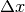 , then the B-spline approximation to a 1-dimensional function is the finite-basis expansion.
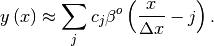
In two dimensions with knot-spacing and 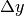 , the function representation is
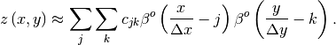
In these expressions, 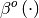 is the space-limited B-spline basis function of order, 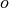 . The requirement of equally-spaced knot-points and equally-spaced data points, allows the development of fast (inverse-filtering) algorithms for determining the coefficients, 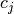 , from sample-values, 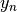 . Unlike the general spline interpolation algorithms, these algorithms can quickly find the spline coefficients for large images.
The advantage of representing a set of samples via B-spline basis functions is that continuous-domain operators (derivatives, re- sampling, integral, etc.) which assume that the data samples are drawn from an underlying continuous function can be computed with relative ease from the spline coefficients. For example, the second-derivative of a spline is
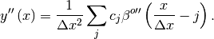
Using the property of B-splines that
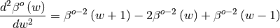
it can be seen that
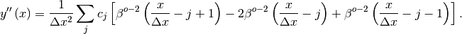
If 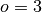 , then at the sample points,
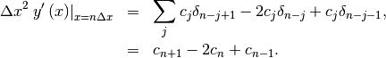
Thus, the second-derivative signal can be easily calculated from the spline fit. if desired, smoothing splines can be found to make the second-derivative less sensitive to random-errors.
The savvy reader will have already noticed that the data samples are related to the knot coefficients via a convolution operator, so that simple convolution with the sampled B-spline function recovers the original data from the spline coefficients. The output of convolutions can change depending on how boundaries are handled (this becomes increasingly more important as the number of dimensions in the data- set increases). The algorithms relating to B-splines in the signal- processing sub package assume mirror-symmetric boundary conditions. Thus, spline coefficients are computed based on that assumption, and data-samples can be recovered exactly from the spline coefficients by assuming them to be mirror-symmetric also.
Currently the package provides functions for determining second- and third-order cubic spline coefficients from equally spaced samples in one- and two-dimensions (signal.qspline1d, signal.qspline2d, signal.cspline1d, signal.cspline2d). The package also supplies a function ( signal.bspline ) for evaluating the bspline basis function, 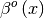 for arbitrary order and 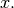 For large , the B-spline basis function can be approximated well by a zero-mean Gaussian function with standard-deviation equal to 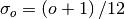 :
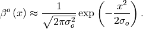
A function to compute this Gaussian for arbitrary 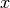 and is also available ( signal.gauss_spline ). The following code and Figure uses spline-filtering to compute an edge-image (the second-derivative of a smoothed spline) of Lena’s face which is an array returned by the command lena. The command signal.sepfir2d was used to apply a separable two-dimensional FIR filter with mirror- symmetric boundary conditions to the spline coefficients. This function is ideally suited for reconstructing samples from spline coefficients and is faster than signal.convolve2d which convolves arbitrary two-dimensional filters and allows for choosing mirror-symmetric boundary conditions.
>>> from numpy import *
>>> from scipy import signal, misc
>>> import matplotlib.pyplot as plt
>>> image = misc.lena().astype(float32)
>>> derfilt = array([1.0,-2,1.0],float32)
>>> ck = signal.cspline2d(image,8.0)
>>> deriv = signal.sepfir2d(ck, derfilt, [1]) + \
>>> signal.sepfir2d(ck, [1], derfilt)
Alternatively we could have done:
laplacian = array([[0,1,0],[1,-4,1],[0,1,0]],float32)
deriv2 = signal.convolve2d(ck,laplacian,mode='same',boundary='symm')
>>> plt.figure()
>>> plt.imshow(image)
>>> plt.gray()
>>> plt.title('Original image')
>>> plt.show()
>>> plt.figure()
>>> plt.imshow(deriv)
>>> plt.gray()
>>> plt.title('Output of spline edge filter')
>>> plt.show()
Filtering¶
Filtering is a generic name for any system that modifies an input signal in some way. In SciPy a signal can be thought of as a Numpy array. There are different kinds of filters for different kinds of operations. There are two broad kinds of filtering operations: linear and non-linear. Linear filters can always be reduced to multiplication of the flattened Numpy array by an appropriate matrix resulting in another flattened Numpy array. Of course, this is not usually the best way to compute the filter as the matrices and vectors involved may be huge. For example filtering a 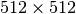 image with this method would require multiplication of a 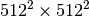 matrix with a 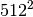 vector. Just trying to store the matrix using a standard Numpy array would require 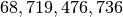 elements. At 4 bytes per element this would require 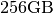 of memory. In most applications most of the elements of this matrix are zero and a different method for computing the output of the filter is employed.
Convolution/Correlation¶
Many linear filters also have the property of shift-invariance. This means that the filtering operation is the same at different locations in the signal and it implies that the filtering matrix can be constructed from knowledge of one row (or column) of the matrix alone. In this case, the matrix multiplication can be accomplished using Fourier transforms.
Let 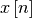 define a one-dimensional signal indexed by the integer 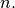 Full convolution of two one-dimensional signals can be expressed as
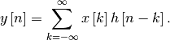
This equation can only be implemented directly if we limit the sequences to finite support sequences that can be stored in a computer, choose 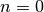 to be the starting point of both sequences, let 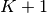 be that value for which 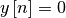 for all 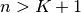 and 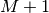 be that value for which 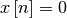 for all 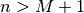 , then the discrete convolution expression is
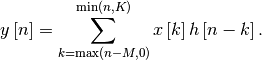
For convenience assume 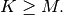 Then, more explicitly the output of this operation is
![\begin{eqnarray*} y\left[0\right] & = & x\left[0\right]h\left[0\right]\\ y\left[1\right] & = & x\left[0\right]h\left[1\right]+x\left[1\right]h\left[0\right]\\ y\left[2\right] & = & x\left[0\right]h\left[2\right]+x\left[1\right]h\left[1\right]+x\left[2\right]h\left[0\right]\\ \vdots & \vdots & \vdots\\ y\left[M\right] & = & x\left[0\right]h\left[M\right]+x\left[1\right]h\left[M-1\right]+\cdots+x\left[M\right]h\left[0\right]\\ y\left[M+1\right] & = & x\left[1\right]h\left[M\right]+x\left[2\right]h\left[M-1\right]+\cdots+x\left[M+1\right]h\left[0\right]\\ \vdots & \vdots & \vdots\\ y\left[K\right] & = & x\left[K-M\right]h\left[M\right]+\cdots+x\left[K\right]h\left[0\right]\\ y\left[K+1\right] & = & x\left[K+1-M\right]h\left[M\right]+\cdots+x\left[K\right]h\left[1\right]\\ \vdots & \vdots & \vdots\\ y\left[K+M-1\right] & = & x\left[K-1\right]h\left[M\right]+x\left[K\right]h\left[M-1\right]\\ y\left[K+M\right] & = & x\left[K\right]h\left[M\right].\end{eqnarray*}](../_images/math/6fe58cba92c006e7899b26eb7dd594b79b7a62d9.png)
Thus, the full discrete convolution of two finite sequences of lengths and respectively results in a finite sequence of length 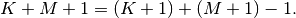
One dimensional convolution is implemented in SciPy with the function signal.convolve . This function takes as inputs the signals 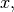 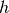 , and an optional flag and returns the signal 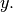 The optional flag allows for specification of which part of the output signal to return. The default value of ‘full’ returns the entire signal. If the flag has a value of ‘same’ then only the middle 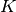 values are returned starting at 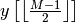 so that the output has the same length as the largest input. If the flag has a value of ‘valid’ then only the middle 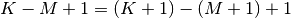 output values are returned where 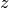 depends on all of the values of the smallest input from 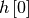 to 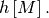 In other words only the values 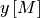 to 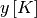 inclusive are returned.
This same function signal.convolve can actually take  -dimensional arrays as inputs and will return the
-dimensional convolution of the two arrays. The same input flags are
available for that case as well.
-dimensional arrays as inputs and will return the
-dimensional convolution of the two arrays. The same input flags are
available for that case as well.
Correlation is very similar to convolution except for the minus sign becomes a plus sign. Thus
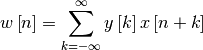
is the (cross) correlation of the signals  and For
finite-length signals with outside of the range
and outside of the range
the summation can simplify to
and For
finite-length signals with outside of the range
and outside of the range
the summation can simplify to
Assuming again that this is
![\begin{eqnarray*} w\left[-K\right] & = & y\left[K\right]x\left[0\right]\\ w\left[-K+1\right] & = & y\left[K-1\right]x\left[0\right]+y\left[K\right]x\left[1\right]\\ \vdots & \vdots & \vdots\\ w\left[M-K\right] & = & y\left[K-M\right]x\left[0\right]+y\left[K-M+1\right]x\left[1\right]+\cdots+y\left[K\right]x\left[M\right]\\ w\left[M-K+1\right] & = & y\left[K-M-1\right]x\left[0\right]+\cdots+y\left[K-1\right]x\left[M\right]\\ \vdots & \vdots & \vdots\\ w\left[-1\right] & = & y\left[1\right]x\left[0\right]+y\left[2\right]x\left[1\right]+\cdots+y\left[M+1\right]x\left[M\right]\\ w\left[0\right] & = & y\left[0\right]x\left[0\right]+y\left[1\right]x\left[1\right]+\cdots+y\left[M\right]x\left[M\right]\\ w\left[1\right] & = & y\left[0\right]x\left[1\right]+y\left[1\right]x\left[2\right]+\cdots+y\left[M-1\right]x\left[M\right]\\ w\left[2\right] & = & y\left[0\right]x\left[2\right]+y\left[1\right]x\left[3\right]+\cdots+y\left[M-2\right]x\left[M\right]\\ \vdots & \vdots & \vdots\\ w\left[M-1\right] & = & y\left[0\right]x\left[M-1\right]+y\left[1\right]x\left[M\right]\\ w\left[M\right] & = & y\left[0\right]x\left[M\right].\end{eqnarray*}](../_images/math/6ce5f2d19a556c0a429cf5f242963542d31a2e61.png)
The SciPy function signal.correlate implements this operation. Equivalent flags are available for this operation to return the full length sequence (‘full’) or a sequence with the same size as the largest sequence starting at (‘same’) or a sequence where the values depend on all the values of the smallest sequence (‘valid’). This final option returns the values to inclusive.
The function signal.correlate can also take arbitrary
-dimensional arrays as input and return the -dimensional
convolution of the two arrays on output.
When signal.correlate and/or signal.convolve can be used to construct arbitrary image filters to perform actions such as blurring, enhancing, and edge-detection for an image.
Convolution is mainly used for filtering when one of the signals is much smaller than the other ( ), otherwise linear filtering is more easily accomplished in the frequency domain (see Fourier Transforms).
Difference-equation filtering¶
A general class of linear one-dimensional filters (that includes convolution filters) are filters described by the difference equation
where is the input sequence and is the output sequence. If we assume initial rest so that for , then this kind of filter can be implemented using convolution. However, the convolution filter sequence could be infinite if for In addition, this general class of linear filter allows initial conditions to be placed on for resulting in a filter that cannot be expressed using convolution.
The difference equation filter can be thought of as finding recursively in terms of it’s previous values
Often is chosen for normalization. The implementation in SciPy of this general difference equation filter is a little more complicated then would be implied by the previous equation. It is implemented so that only one signal needs to be delayed. The actual implementation equations are (assuming ).
![\begin{eqnarray*} y\left[n\right] & = & b_{0}x\left[n\right]+z_{0}\left[n-1\right]\\ z_{0}\left[n\right] & = & b_{1}x\left[n\right]+z_{1}\left[n-1\right]-a_{1}y\left[n\right]\\ z_{1}\left[n\right] & = & b_{2}x\left[n\right]+z_{2}\left[n-1\right]-a_{2}y\left[n\right]\\ \vdots & \vdots & \vdots\\ z_{K-2}\left[n\right] & = & b_{K-1}x\left[n\right]+z_{K-1}\left[n-1\right]-a_{K-1}y\left[n\right]\\ z_{K-1}\left[n\right] & = & b_{K}x\left[n\right]-a_{K}y\left[n\right],\end{eqnarray*}](../_images/math/062cff3bca754552673fdb66da28377d2bbd3d8c.png)
where Note that if
and if In this way, the
output at time  depends only on the input at time
and the value of at the previous time. This can always
be calculated as long as the values
are
computed and stored at each time step.
depends only on the input at time
and the value of at the previous time. This can always
be calculated as long as the values
are
computed and stored at each time step.
The difference-equation filter is called using the command
signal.lfilter in SciPy. This command takes as inputs the
vector the vector, a signal and
returns the vector (the same length as ) computed
using the equation given above. If is
-dimensional, then the filter is computed along the axis provided. If,
desired, initial conditions providing the values of
to can be
provided or else it will be assumed that they are all zero. If initial
conditions are provided, then the final conditions on the intermediate
variables are also returned. These could be used, for example, to
restart the calculation in the same state.
Sometimes it is more convenient to express the initial conditions in terms of the signals and In other words, perhaps you have the values of to and the values of to and would like to determine what values of should be delivered as initial conditions to the difference-equation filter. It is not difficult to show that for
Using this formula we can find the intial condition vector
to given initial
conditions on (and ). The command signal.lfiltic
performs this function.
Other filters¶
The signal processing package provides many more filters as well.
Median Filter¶
A median filter is commonly applied when noise is markedly non-Gaussian or when it is desired to preserve edges. The median filter works by sorting all of the array pixel values in a rectangular region surrounding the point of interest. The sample median of this list of neighborhood pixel values is used as the value for the output array. The sample median is the middle array value in a sorted list of neighborhood values. If there are an even number of elements in the neighborhood, then the average of the middle two values is used as the median. A general purpose median filter that works on N-dimensional arrays is signal.medfilt . A specialized version that works only for two-dimensional arrays is available as signal.medfilt2d .
Order Filter¶
A median filter is a specific example of a more general class of filters called order filters. To compute the output at a particular pixel, all order filters use the array values in a region surrounding that pixel. These array values are sorted and then one of them is selected as the output value. For the median filter, the sample median of the list of array values is used as the output. A general order filter allows the user to select which of the sorted values will be used as the output. So, for example one could choose to pick the maximum in the list or the minimum. The order filter takes an additional argument besides the input array and the region mask that specifies which of the elements in the sorted list of neighbor array values should be used as the output. The command to perform an order filter is signal.order_filter .
Wiener filter¶
The Wiener filter is a simple deblurring filter for denoising images. This is not the Wiener filter commonly described in image reconstruction problems but instead it is a simple, local-mean filter. Let be the input signal, then the output is
where is the local estimate of the mean and is the local estimate of the variance. The window for these estimates is an optional input parameter (default is ). The parameter is a threshold noise parameter. If is not given then it is estimated as the average of the local variances.
Hilbert filter¶
The Hilbert transform constructs the complex-valued analytic signal from a real signal. For example if then would return (except near the edges) In the frequency domain, the hilbert transform performs
where is 2 for positive frequencies, for negative frequencies and for zero-frequencies.
Least-Squares Spectral Analysis¶
Least-squares spectral analysis (LSSA) is a method of estimating a frequency spectrum, based on a least squares fit of sinusoids to data samples, similar to Fourier analysis. Fourier analysis, the most used spectral method in science, generally boosts long-periodic noise in long gapped records; LSSA mitigates such problems.
Lomb-Scargle Periodograms (lombscargle)¶
The Lomb-Scargle method performs spectral analysis on unevenly sampled data and is known to be a powerful way to find, and test the significance of, weak periodic signals.
For a time series comprising measurements sampled at times where , assumed to have been scaled and shifted such that its mean is zero and its variance is unity, the normalized Lomb-Scargle periodogram at frequency is
Here, is the angular frequency. The frequency dependent time offset is given by
The lombscargle function calculates the periodogram using a slightly modified algorithm due to Townsend [3] which allows the periodogram to be calculated using only a single pass through the input arrays for each frequency.
The equation is refactored as:
and
Here,
while the sums are
This requires trigonometric function evaluations giving a factor of speed increase over the straightforward implementation.
References
Some further reading and related software:
| [1] | N.R. Lomb “Least-squares frequency analysis of unequally spaced data”, Astrophysics and Space Science, vol 39, pp. 447-462, 1976 |
| [2] | J.D. Scargle “Studies in astronomical time series analysis. II - Statistical aspects of spectral analysis of unevenly spaced data”, The Astrophysical Journal, vol 263, pp. 835-853, 1982 |
| [3] | R.H.D. Townsend, “Fast calculation of the Lomb-Scargle periodogram using graphics processing units.”, The Astrophysical Journal Supplement Series, vol 191, pp. 247-253, 2010 |

Table Of Contents
Previous topic
Fourier Transforms (scipy.fftpack)